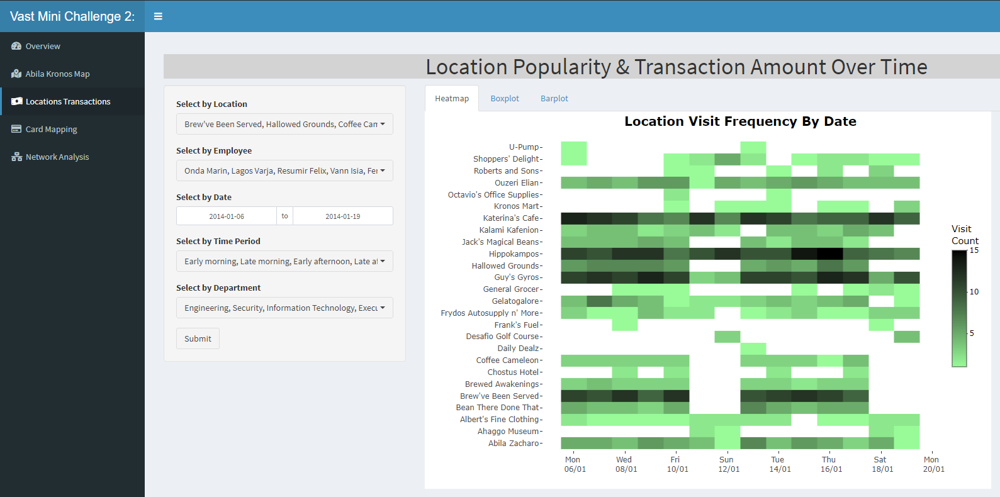
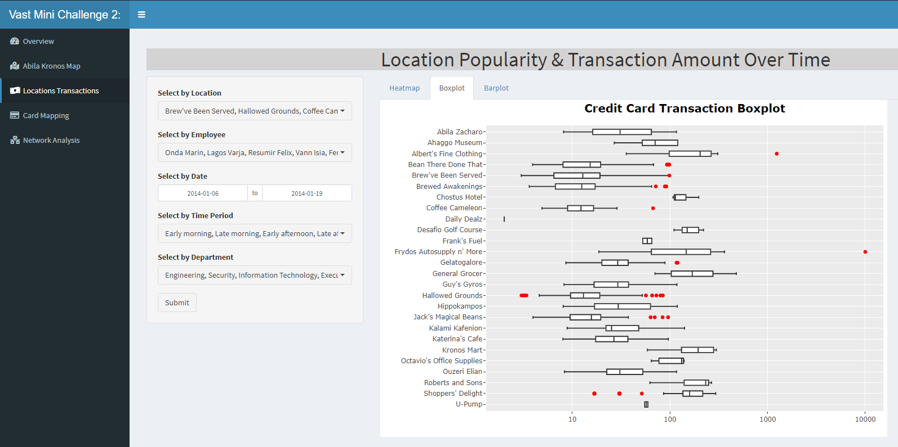
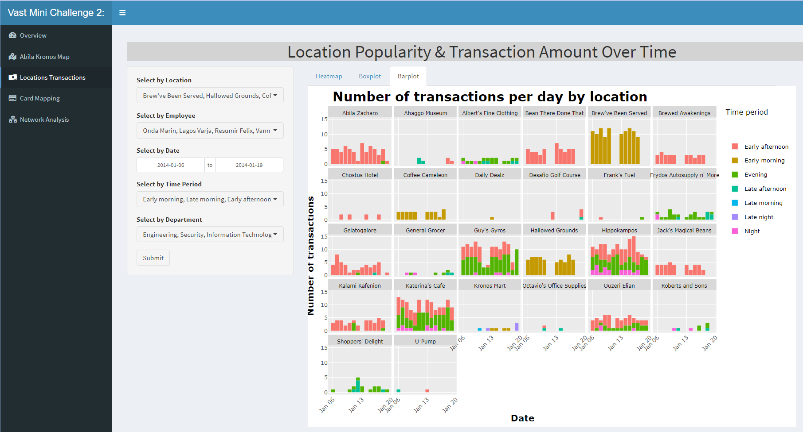
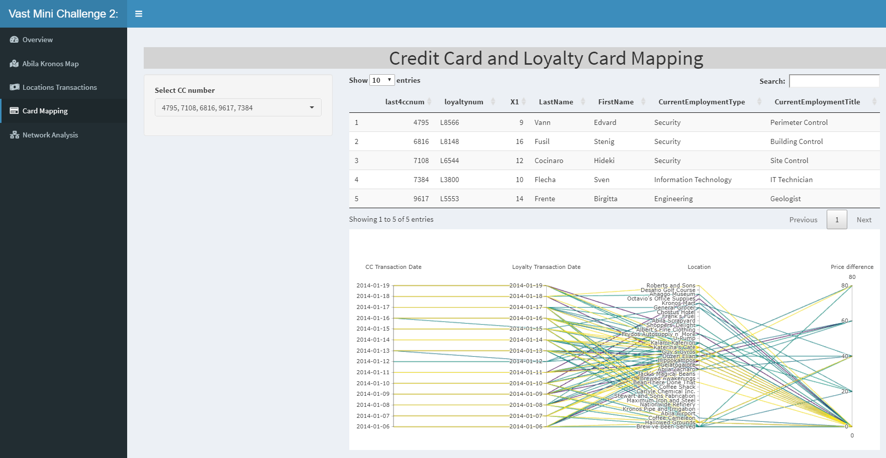
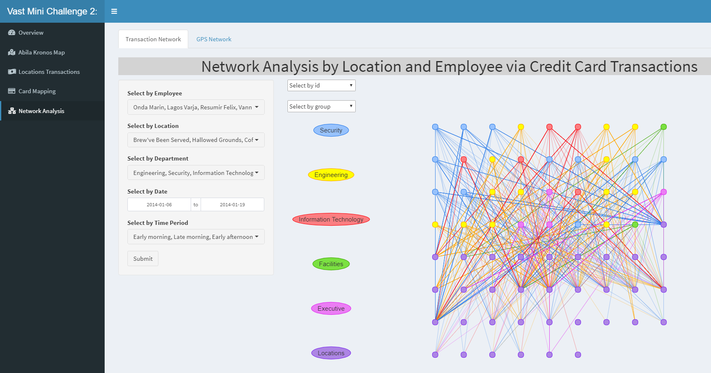
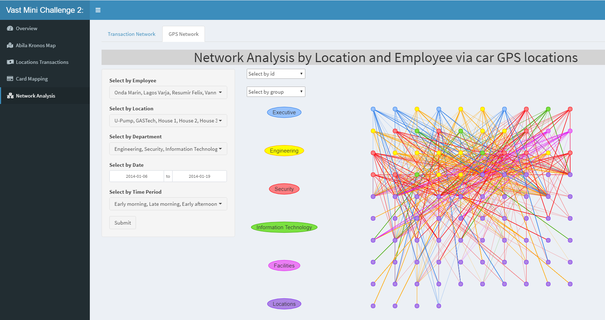

Saptiotemporal Analysis of Gastech Employees’ Movement Data
ISSS608 G1 Group 5 VAST MC2
Chen Yuxi 1
yuxi.chen.2020@mitb.smu.edu.sg
Lim Yong Kai 1
yongkai.lim.2020@mitb.smu.edu.sg
Jovinka Hartanto 1
jovinkah.2020@mitb.smu.edu.sg
1 Singapore Management University
Introduction
The VAST 2021 Mini Challenge 2 outlines a hypothetical scenario in which several GAStech employees have gone missing and the organisation, Protectors of Kronos (POK), is suspected of being involved. The challenge requires identification of suspicious activities hidden in data and determine any dubious people and locations that should be reported to the law enforcement using interactive visual analytical tools.
Movtivation and objectives
Our research and development effort aims to enable Kronos law enforcement with the ability to easily analyse, drill down and identify key suspects and suspicious locations, and thereby speeding up the investigation process.
The use cases of the data visualisation tool include but are not limited to the following:
- The most popular locations and when they are popular
- Infer the owner of each credit card and loyalty card
- Identify potential informal or unofficial relationships among GASTech personnel
- Analyze unusual and suspicious activities of the employees
- Analyze daily routines of GasTech employees
The application hat aims to provide users actionable insights based on the following analyses:
- Exploratory Data Analysis (EDA) of GPS tracking data and credit and loyalty card transaction patterns
- Visualisation of employee movements over time and associated purchase transactions
- Network analysis of employees based on their visited locations
Approach and Methodology
Application
The Application was designed using R Shiny and hosted on shinyapps.io server. The application has 5 main section with various interactive visual analytics tools to allow users to investigate the data. The user guide to the application is available at https://isss608g1group5.netlify.app/userguide.html.
Abila Kronos Map
Add desc and picture here later!!!
Locations Transactions

Figure 1: Heatmap

Figure 2: Boxplot

Figure 3: Barplot
Card Mapping

Figure 4: Parallel Coordinate Plot
Network Analysis

Figure 5: Network Analysis based on Credit Card Transactions

Figure 6: Network Analysis based on GPS data
Future Work
Conclusion
Through the utilisation of interactive visual analytical tools in the Shiny application, users can visualise patterns and anomaly activities of the employees. The user-friendly layout incorporated with drop down filters allow users to slice the data and utilise the interactivity of each visusalisation to investigate the data without knowledge of programming or data analytics.
Acknowledgement
We would like to thank Professor Kam Tin Seong for his guidance throughout the tenure of the project.
Project Links
Our website can be found at https://isss608g1group5.netlify.app/. Alternatively, scan the QR code at the bottom left to access our website.
Code for the documents and applications can be found at https://github.com/jovinkahartanto/Visual-Analytics—Group-Project. Alternatively, scan the middle QR code at the bottom to access our Github.
Application can be assessed at https://limyongkai.shinyapps.io/ISSS608T5Shiny. Alternatively, scan the QR code on the bottom right to access our Shiny Application.